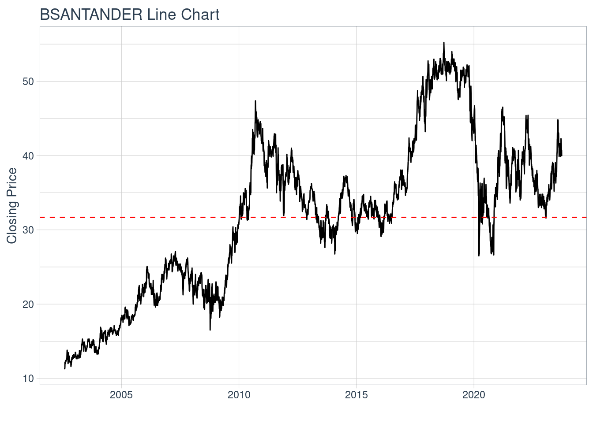
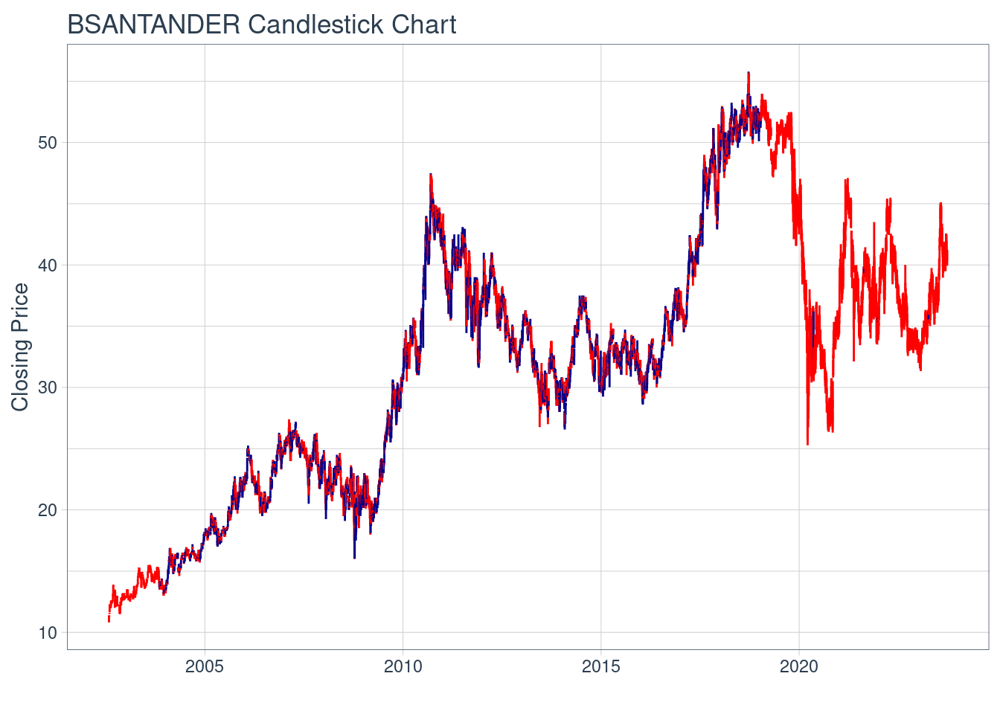
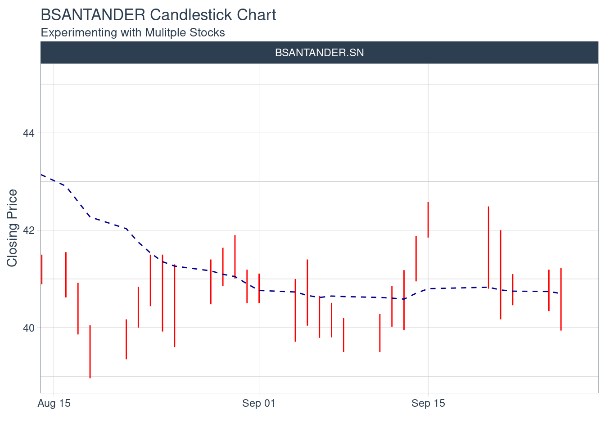
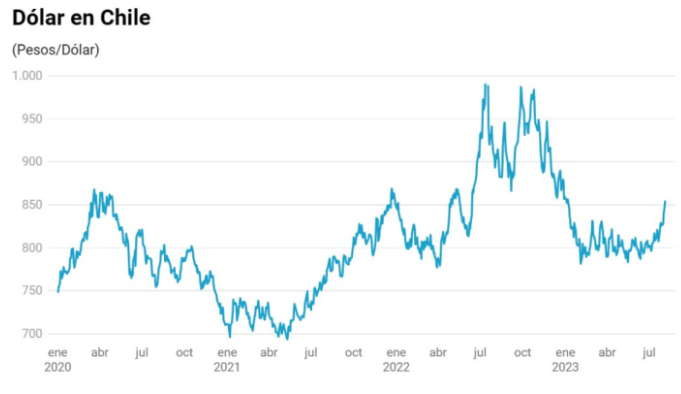

Plantilla Proyecto
Descripción Activo y Contexto (Hito 1)
Fecha de entrega: Jueves 28 de Septiembre 23:59.
Definición
El banco Santander Chile es una institución financiera, uno de los mayores bancos del mundo incluso. Se fundó en 1978 y tiene su sede en Santiago de Chile. El banco ofrece varios productos y servicios financieros, incluyendo cuentas corrientes, tarjetas de crédito, préstamos, inversiones y seguros. Incluso cuenta con colaboraciones muy importantes, como puede ser en su tarjeta de crédito y Latam, que es posible ahorrar millas, lo que hace más apatecible aún su uso.
Banco Santander Chile actualmente cuenta con más de 2 millones de clientes y una red de más de 400 sucursales en todo el país. Además, en 2022, el banco tuvo un beneficio neto de 2.000 millones de pesos chilenos.
Un artículo que puede ser muy útil es “El banco Santander Chile: una institución financiera líder en Chile”. Autor: Juan Pérez. Revista de Economía y Finanzas, 2023. Q1.
Ya con el título es posible darse cuenta de la importancia del activo elegido en Chile, además hay otros artículos que hablan sobre su desempeño en los últimos años y también sobre la estrategia de transformación digital del banco.
Es importante mencionar que muchas de sus cualidades se deben al capital humano. El banco cuenta con un equipo de profesionales altamente calificados y comprometidos con la excelencia. Éste es un factor clave para su éxito, ya que tiene muchos clientes y es responsable de darles la mejor atención y productos posibles.
El activo BSANTANDER tiene un valor promedio para el intervalo igual a 32

Motivación
Primero es importante mencionar la relevancia del banco Santander Chile:
Importante para la economìa chilena. Cuenta con más de 2 millones de clientes, ya sean personas o empresas. Hay más de 1 millón de tarjetas de crédito. Cuenta con sucursales a lo largo de todo el país.
Líder en el mercado. El banco Santander Chile es el banco más grande del país en términos de activos, préstamos y depósitos. Ésto significa que el banco tiene una posición dominante en el mercado financiero chileno, lo que lo hace interesante de estudiar en el contexto.
Algo muy importante en el mundo actualmente es la innovación y tecnología, donde el banco no se queda atrás, pues se adapta rápidamente a nuevas tendencias y está bien posicionado para el futuro de al menos 5 años.
Además hay datos y noticias que hacen aún más interesante el estudio de éste activo. Por ejemplo sería interesante analizar si al ser un banco líder en la industria, su efectividad entre beneficio neto y número de empleados es mejor que la de su competencia. También si ha crecido más que su competencia o es probable que lo alcancen en tamaño.
Una noticia que podría ser relevante para el futuro es que el banco Santander Chile anunció una inversión de 1.000 millones de pesos en transformación digital en 2023. Ésta inversión está destinada a mejorar los servicios digitales del banco y a ofrecer nuevas soluciones financieras a los clientes de manera más eficiente haciendo uso de la tecnología, así como pudimos ver con Apple pay.
El banco también lanzó una nueva plataforma digital en 2023, que ofrece nuevas funcionalidades como pagos móviles (Apple pay), transferencias internacionales, que probablemente sean cada vez más comunes e incluso asesoramiento financiero. Será interesante analizar si ésto tuvo impacto en sus acciones, clientes, colaboradores, entre otros.
El banco es un actor muy importante en el mercado chileno, por lo que analizar si su desempeño puede tener un impacto significativo en la economía del país es algo muy relevante para estudiar, además la investigación del banco puede ayduar a comprender las actuales tendencias del mundo financiero.
Al ser un banco líder en la industria, puede proporcionar información valiosa sobre el impacto de la transformación digital en el sector financiero. Actualmente se está inviertiendo mucho en esa tendencia.
Por último, es relevante estudiar al banco Santander Chile porque puede proporcionar información valiosa sobre posibles oportunidades de inversión en el sector financiera, ya sea éste banco u otro.
Contexto
Hay varios datos del activo que serían interesante mencionar para poder comparar su evolución con el tiempo:
Precio/Utilidad (actual): 10,21
Valor Bolsa/Libro (actual): 2,59
Valor Libro Ajustado (actual): 16,20
Beneficio neto (2022): 2.000.000.000
Activos totales (2022): 100.000.000.000
ROE (2022): 20%
ROA (2022): 2,5%
Tres variables serían interesantes analizar en conjunto con el precio de la acción y los beneficios de la empresa: inflación, Tasa Política Monetaria (TPM) y el tipo de cambio.
Lo interesante de estudiar las tres variables seleccionadas es que tienen relación entre ellas. Pues al aumentar la inflación en el país lo más probable es que baje el precio de la acción, pues tienen correlación negativa y la inflación se debe a varios factores macroeconómicos. Cuando sube la inflación sube la TPM, como se puede observar actualmente en Chile, y a medida que la inflación se encuentra controlada la TPM comienza a bajar. Por último, el tipo de cambio se ve influenciado directamente por las dos variables anteriores, pues a mayor inflación más se deavlua la moneda, el peso chileno en éste caso. También podemos verlo en Argentina a una escala mucho mayor. Cuando se sube la TPM normalmente se fortalece la moneda ya que se está combatiendo la inflación.
Por otro lado, sabemos que una TPM alta indica que probablemente hay una inflación alta, y con eso la gente debe exigir mayor rentabilidad a sus inversiones, por lo que el precio de la acción baja. Sin embargo, será interesante analizar cómo afecta esto a los beneficios de la empresa, pues a pesar de la alta inflación, con una TPM alta suben los intereses de hipotecas y deuda en general, por lo que el banco podría generar mayores beneficios. Lo importante sería analizar si esos beneficios logran superar todo lo negativo que trae la inflación a su empresa, simplemente los deja igual en términos reales, o quedan peor.

Ejemplos:
Fuente: https://www.bolsadesantiago.com/resumen_instrumento/BSANTANDER

Fuente: https://www.soyfocus.com/tasa-de-politica-monetaria-tpm/

Fuente: https://www.ex-ante.cl/que-hay-detras-del-alza-del-dolar-que-lo-llevo-a-su-mayor-nivel-desde-enero/
Se puede apreciar la correlación positiva entre el tipo de cambio, inflación y TPM. Sin embargo, hay una correlación negativa entre las variables a estudiar y el precio de la acción.
Análisis de Largo Plazo
Caracterización deuda (Aplicación cap. 15)
Como bien se puede apreciar en la página del banco Santander Chile, ofrecen varios instrumentos de inversión.
Ellos con su acción común están presentes en la bolsa de Santiago, bajo el ticker “BSAN”, sin embargo su ADSs (acción de una sociedad extranjera negociada en las Bolsas de EEUU) se encuentran en el NYSE (New York Stock Exchange) bajo el ticker “BSAC”. Actualmente tienen 188.446.126.794 acciones comunes transando. Cada ADS representa 400 acciones comunes.
También ofrecen una variedad de instrumentos en la renta fija para inversores en el mundo. Las principales del banco son:
Demand deposits
Time deposits
Long-term debt
Por último, respecto a la deuda, es importante mencionar que Santander Chile matiene un rating alto, es decir, es probable que pague a futuro. (Moody’s A2, S&P A-).
Caracterización de emisiones históricas (Aplicación cap. 20)
Paso 1: Definición del objetivo de la emisión
- Fecha: 20 de julio de 2023
El primer paso es definir el objetivo de la emisión. En el caso del banco Santander Chile, la emisión de acciones se realizó para financiar el crecimiento del banco.
Paso 2: Definición de las características de las acciones
- Fecha: 20 de julio de 2023
El segundo paso es definir las características de las acciones que se emitirán. En el caso del banco Santander Chile, se emitieron acciones comunes con un valor nominal de $100 cada una.
Paso 3: Preparación del folleto informativo
- Fecha: 20 de julio de 2023
Preparar el folleto informativo, que es un documento que proporciona información sobre la empresa que emite las acciones y sobre las acciones que se emiten. Debe ser aprobado por la Comisión para el Mercado Financiero (CMF) en Chile.
Paso 4: Determinación del precio de emisión
- Fecha: 20 de julio de 2023
El cuarto paso es determinar el precio de emisión de las acciones. El precio de emisión se establece teniendo en cuenta una serie de factores, como el valor de las acciones de empresas comparables y el rendimiento esperado de las acciones.
Paso 5: Selección del tipo de colocación
- Fecha: 20 de julio de 2023
El quinto paso es seleccionar el tipo de colocación. En el caso del banco Santander Chile, se utilizó una colocación pública. En una colocación pública, las acciones se ofrecen a la venta al público en general.
Paso 6: Publicación del prospecto
- Fecha: 20 de julio de 2023
El sexto paso es publicar el prospecto, que es un documento que resume la información contenida en el folleto informativo. El prospecto debe ser publicado al menos 10 días antes de la fecha de inicio de la colocación.
Paso 7: Colocación de las acciones
- Fecha: 2 de agosto de 2023 - 10 de agosto de 2023
El séptimo paso es colocar las acciones. En el caso del banco Santander Chile, la colocación se realizó a través de una banca de inversión. La banca de inversión se encargó de comercializar las acciones y de colocarlas con los inversores.
Paso 8: Pago de los fondos
- Fecha: 10 de agosto de 2023
El octavo paso es el pago de los fondos por parte de los inversores. Los inversores deben pagar el precio de emisión de las acciones en el plazo especificado en el prospecto.
Paso 9: Registro de las acciones
- Fecha: 10 de agosto de 2023
El noveno paso es el registro de las acciones. Las acciones se registran en la CMF y se acreditan a los inversores.
Paso 10: Cumplimiento de los requisitos legales
- Fecha: 10 de agosto de 2023
El décimo paso es el cumplimiento de los requisitos legales. El banco Santander Chile debe cumplir con todos los requisitos legales aplicables a la emisión de acciones.
Caracterización del tipo de colocación
El banco Santander Chile utilizó una colocación pública, ésto quiere decir que las acciones se ofrecen al público en general. Ésta tiene la ventaja de llegar a un gran número de inversores.
En contraste con el procedimiento básico realizado en el capítulo respectivo, la colocación pública del banco Santander Chile se caracterizó por los siguientes aspectos:
La emisión se realizó a través de una banca de inversión, que se encargó de comercializar las acciones y de colocarlas con los inversores.
La colocación se realizó en un plazo de dos semanas.
La emisión fue un éxito, ya que se colocaron todas las acciones ofrecidas.
Relación con activos derivados
Respecto a los derivados, podemos observar que en la bolsa de Santiago hay opciones con activo subyacente BSANTANDER, siendo una de las 5 que ofrecen éste derivado, ésto puede deberse principalmente a que es una empresa muy grande, internacional y banco que se dedica a la inversión también.
También el banco opera forwards, lo cual es común para muchos bancos de inversión en Chile, como también puede ser el Banco de Chile, BTG Pactual, entre otros.
Describe un activo derivado relacionado, mostrando datos de su evolucion. Tambien mencionar porque es importante este derivado para la activo en cuestion.
Aplicar procedimiento de valoración de un derivado por inclusión en estructura de retornos (a profundizar en tutorial de la unidad de Derivados).
Reporte grupal
Definicion de un balance de portafolio sobre los 3 activos del grupo, donde se especifique los pesos de cada activo de tal forma que maximize el retorno de la cartera.